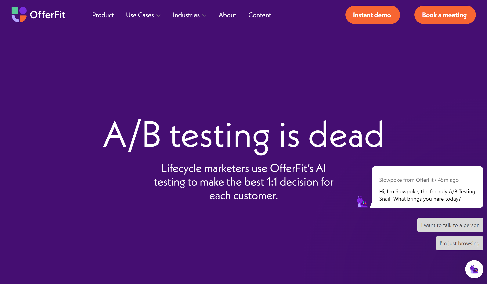

Automated Email Marketing Part #1: The Power of Personalization
This post will cover:
- The advantages and drawbacks of personalization for marketers and how AI fits into the picture
- My idea for project that integrates existing common e-commerce marketing tools with LangChain to create personalized email marketing campaigns
- A look at other AI content marketing tools and the benefits and drawbacks of creating your own tools
What is Personalization and Why?
Personalization is all the rage for marketers. From a May 2023 Mckinsey article titled What is personalization?:
“Personalization marketing has real advantages for companies: it can reduce customer acquisition costs by as much as 50 percent, lift revenues by 5 to 15 percent, and increase marketing ROI by 10 to 30 percent. Personalization has also been shown to improve performance and provide better customer outcomes.”
Speaking from my own experience as a sales rep, personalization is one of the most important things customers care about. Whether or not it’s genuine we all want to feel seen, acknowledged, and welcomed by a company before we even consider buying a product. Imagine if you went through life talking to everyone the same way… That’s just not how the world works. Addressing your professor as bro or your friends as sir wouldn’t feel right. So of course marketers who try to pidgeon hole their customers with one specific style of content are going to be at a disadvantage. The only issue is until recently, truly personalized content was a big ask. Sure you could look at demographics and behavioral graphics, cluster groups of customers together, and target marketing campaigns based on a statistically related set of factors… but that’s really slow and anyways no two customers are really the same. This is where accessible data, machine learning algorithms, and AI content creation can be a real game changer. What if marketers could design content so specific and so personalized that each customer feels personally acknowledged by the company? And what if they could design this content dynamically in a matter of seconds? This is the future of content marketing.
A Look at an Early-Stage Industry

“A/B Testing is Dead” confidently proclaims OfferFit’s Website, “We Merge Human Creativity with AI” on Persado’s, “More Clicks, Conversions, and Customers with AI Content” writes Phrasee. These are just a few of the start-ups looking to cash in on a new wave of content marketing. But how effective are these services really? And is it easier to implement these solutions in-house? These services have a couple of crucial hoops they need to jump through:
- Brand alignment: LLMs are notoriously unpredictable. There’s nothing more important in marketing than maintaining consistency and brand integrity, and it may feel like a leap of faith to trust AI with this crucial attribute. Designing a system that will be can be customized to align with any brand style could prove to be a big ask.
- Content Diversity: While alignment is crucial a diversity of content is too. There’s no point in an LLM producing content for customers if it’s going to all be the same sort of thing. Remember, the dream is true 1:1 personalization of content, but that must also be reconciled with brand alignment.
- Performance Optimization: For business to give money to a startup claiming to personalize marketing content, that business needs reason to think that that content will outperform their current content. Part of the job for these tools is being agile and responding to performance data within the target demographic. If you want to kill A/B testing, you have to prove you can beat A/B testing.
These challenges are enough to make some brands apprehensive about integrating such strategies into their workflows. However, if these methods prove successful brands that are late to the party may get left behind. Luckily, there’s an alternative that may be better suited for certain businesses. In-house development. What’s the point of open-source if you don’t use it? Apprehensive brands can exact precise control over the behavior of these models by designing them on their own. Here’s how this might work.
E-commerce Email Marketing Campaign Using LangChain
In the coming posts I will begin building a LangChain program that connects external customer data to an AI model, generates personalized e-mails based on that data, and sends them off to customers all with the press of a button. The goal is to create content that excels on all three vectors I’ve outlines: Brand alignment, Content Diversity, and Performance Optimization. While I won’t be running statistical tests to see just how effective these messages are, I will be using my eyeballs and gut to discuss the pros and cons of my methodology. While this model will be simplified I hope to lift up the hood and show a growth oriented business how content marketing could work for them, and some of the pros and cons of relying on AI generated content, at least in this early stage of AI development.